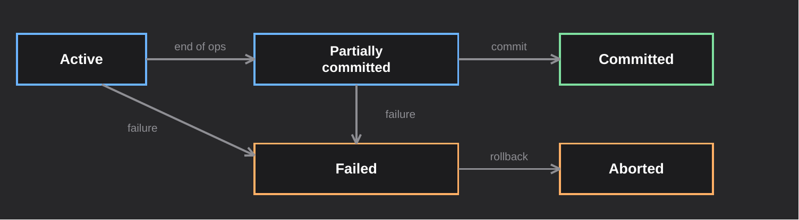
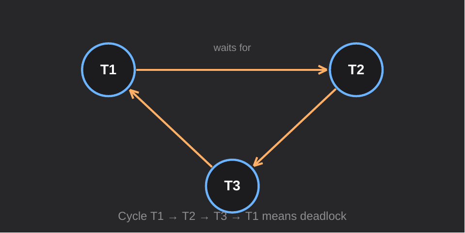
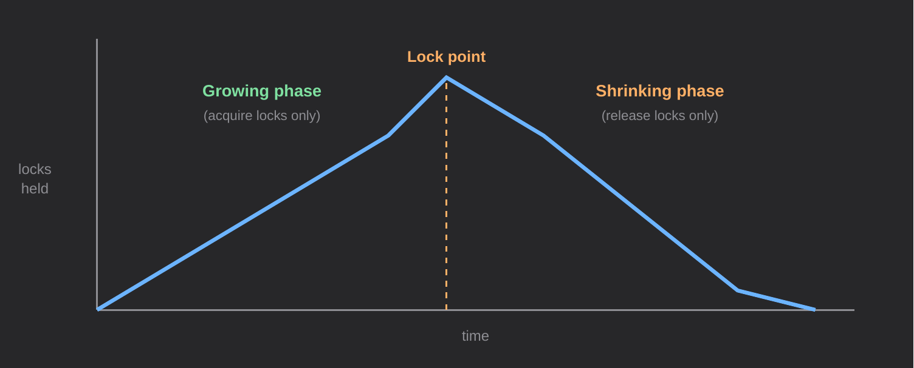
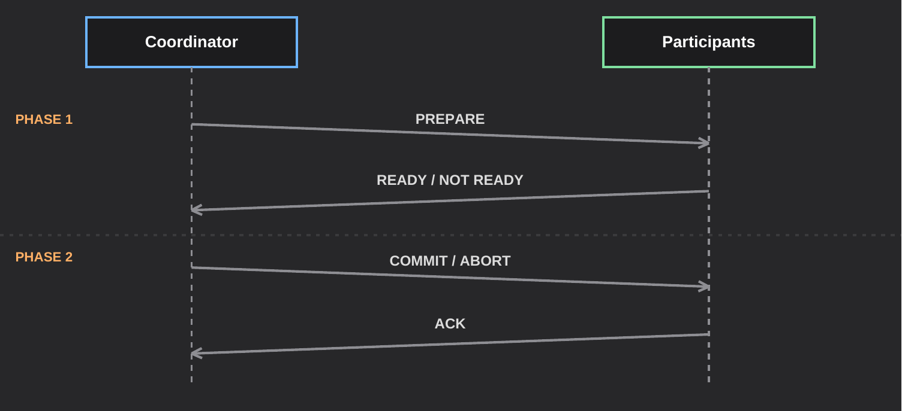

Unit 3
Transaction Management
1) What is a transaction? Explain the ACID properties.
Transaction: A transaction is a logical unit of work consisting of a sequence of read and write operations that accesses and possibly updates data items in a database. It starts with BEGIN and ends with COMMIT or ROLLBACK. Example: transferring Rs. 500 from account A to account B.
Read(A); A = A - 500; Write(A);
Read(B); B = B + 500; Write(B);ACID Properties
- Atomicity (all or nothing): Either all operations of the transaction are executed or none are. If a failure occurs midway, all changes are undone (rolled back). Handled by the recovery manager.
- Consistency: A transaction takes the database from one consistent state to another consistent state. Integrity constraints must hold before and after (e.g., A + B total remains the same). Handled by the programmer and the DBMS.
- Isolation: Concurrent transactions must not interfere; each transaction should feel as if it is running alone. Intermediate results of one transaction are hidden from others. Handled by the concurrency control manager.
- Durability: Once a transaction commits, its changes are permanent and survive system crashes or power failures. Handled by the recovery manager using logs.
2) What is a transaction? Explain its four important properties.
A transaction is a single logical unit of work, made of one or more SQL/read-write operations, that must be executed completely or not at all so that the database stays correct. The four important properties (ACID) are summarised below.
| Property | Meaning | Ensured by |
|---|---|---|
| Atomicity | All operations execute or none (undo on failure) | Recovery manager / log |
| Consistency | Database moves from one valid state to another | Programmer and integrity constraints |
| Isolation | Concurrent transactions do not affect each other | Concurrency control (locking) |
| Durability | Committed changes are permanent despite failures | Recovery manager / log, backups |
Example: In a transfer of Rs. 500 from A to B, atomicity means both debit and credit happen or neither; consistency means A + B stays constant; isolation means another transaction cannot see A debited but B not yet credited; durability means after commit the transfer survives a crash.
Transaction states

Active → Partially committed → Committed; Active/Partially committed → Failed → Aborted (rolled back).
3) Why concurrency control is needed?
Concurrency control is the mechanism to manage simultaneous execution of transactions so that the database remains consistent. Running transactions concurrently improves throughput, CPU and disk utilisation, and reduces waiting and response time. But uncontrolled concurrent execution causes problems.
- Lost update problem: one transaction overwrites the update made by another.
- Dirty read (temporary update) problem: a transaction reads data written by an uncommitted transaction that later fails.
- Incorrect summary / unrepeatable read problem: a transaction sees different values or an inconsistent aggregate because other transactions update data meanwhile.
- These violate the Isolation and Consistency properties.
Hence concurrency control (locking, timestamps, etc.) is needed to guarantee serializable, correct schedules while still allowing parallelism.
4) What is concurrency? What are the three problems due to concurrency? How the problems can be avoided, explain for one of the three problems.
Concurrency means executing multiple transactions at the same time, with their operations interleaved, on a shared database.
Three problems due to concurrency
1. Lost Update Problem
Two transactions read the same item and both update it; the update of one is lost. Let A = 100.
| Time | T1 | T2 |
|---|---|---|
| t1 | Read(A) = 100 | |
| t2 | Read(A) = 100 | |
| t3 | A = A - 20 | |
| t4 | A = A + 50 | |
| t5 | Write(A) = 80 | |
| t6 | Write(A) = 150 |
Final A = 150 instead of 130. The update of T1 is lost.
2. Dirty Read (Temporary Update) Problem
T1 updates a value and later fails/rolls back, but T2 has already read that uncommitted value and used it, so T2 works with data that never existed.
| Time | T1 | T2 |
|---|---|---|
| t1 | Read(A); A = A - 50; Write(A) | |
| t2 | Read(A) (reads uncommittedvalue) | |
| t3 | Rollback | |
| t4 | Uses wrong value of A |
3. Incorrect Summary (Unrepeatable Read) Problem
T1 calculates an aggregate (e.g., SUM of balances) while T2 is updating some of those values. T1 may count some values before and some after the update, giving a wrong total. In the unrepeatable-read form, T1 reads the same item twice and gets different values because T2 modified it in between.
How the problems can be avoided (Lost Update)
Use a locking protocol such as Two-Phase Locking so that a transaction must hold an exclusive lock on A before reading and writing it.
| Time | T1 | T2 |
|---|---|---|
| t1 | Lock-X(A) | |
| t2 | Read(A) = 100 | |
| t3 | Lock-X(A) -> WAIT | |
| t4 | A = A - 20; Write(A) = 80 | |
| t5 | Unlock(A) | |
| t6 | Lock granted; Read(A) = 80 | |
| t7 | A = A + 50; Write(A) = 130 | |
| t8 | Unlock(A) |
Final A = 130, which is correct. T2 could not read A until T1 released it, so no update is lost. Other solutions: timestamp ordering, validation (optimistic) and multiversion techniques.
5) Consider schedule S with transaction T1 and T2. T1 transfer Rs. 150 from account A to C and T2 adds Rs. 50 into account A. Prepare concurrent schedule with two phase locking protocol.
Transactions:
T1: Read(A); A = A - 150; Write(A); Read(C); C = C + 150; Write(C)
T2: Read(A); A = A + 50; Write(A)Assume initial A = 500, C = 300. Both transactions use the exclusive lock (Lock-X) and follow 2PL: all locks are acquired (growing phase) before any lock is released (shrinking phase).
| Step | T1 | T2 |
|---|---|---|
| 1 | Lock-X(A) | |
| 2 | Read(A) [500] | |
| 3 | A = A - 150 | |
| 4 | Write(A) [350] | |
| 5 | Lock-X(A) -> WAIT | |
| 6 | Lock-X(C) (growing phase ends) | |
| 7 | Read(C) [300] | |
| 8 | C = C + 150 | |
| 9 | Write(C) [450] | |
| 10 | Unlock(A) (shrinking begins) | |
| 11 | Lock-X(A) granted | |
| 12 | Unlock(C) | |
| 13 | Read(A) [350] | |
| 14 | A = A + 50 | |
| 15 | Write(A) [400] | |
| 16 | Unlock(A) |
Result: A = 400, C = 450 (total A + C = 850, unchanged except the Rs. 50 added by T2). The schedule is conflict serializable and equivalent to the serial schedule T1 then T2. T1 holds A until it has also locked C, so T2 cannot see an inconsistent state.
6) Explain briefly the meaning of serializability of transactions.
A schedule is the order in which operations of concurrent transactions are executed. A serial schedule runs one transaction completely before the next; it is always correct but slow. A serializable schedule is a concurrent (interleaved) schedule whose effect is the same as that of some serial schedule of the same transactions.
- Serializability is the accepted criterion of correctness for concurrent execution.
- It guarantees Isolation and database consistency while permitting concurrency.
- With n transactions there are n! possible serial schedules; a schedule is serializable if equivalent to any one of them.
- Two forms: conflict serializability and view serializability.
7) Explain both the forms of serializability & relation between the two.
1. Conflict Serializability
Two instructions of different transactions conflict if they access the same data item and at least one is a Write (R-W, W-R, W-W). A schedule S is conflict serializable if it can be converted into a serial schedule by swapping adjacent non-conflicting operations (conflict equivalence). It is tested with a precedence graph: the schedule is conflict serializable iff the graph has no cycle.
2. View Serializability
Schedules S and S' are view equivalent if: (i) for each item Q, the transaction that reads the initial value of Q is the same in both; (ii) for each read, the transaction whose write is read (Ti reads Q written by Tj) is the same; (iii) the transaction doing the final write on each item Q is the same. A schedule is view serializable if it is view equivalent to a serial schedule.
Relation between the two
- Every conflict serializable schedule is also view serializable, but the converse is not true.
- A view serializable schedule that is not conflict serializable contains blind writes (writes without reading).
- Conflict serializability is easy to test (cycle detection, polynomial time); view serializability testing is NP-complete.
- So: Conflict serializable is a subset of View serializable, which is a subset of All schedules.
8) Explain conflict serializability with example.
A schedule is conflict serializable if it is conflict equivalent to a serial schedule, i.e., it can be obtained from a serial schedule by swapping adjacent non-conflicting operations. Conflicting pairs (same item, different transactions, at least one write): Ri(Q)-Wj(Q), Wi(Q)-Rj(Q), Wi(Q)-Wj(Q). Read-Read never conflicts.
Precedence graph test
- Create a node for each transaction.
- Draw edge Ti → Tj if an operation of Ti conflicts with a later operation of Tj.
- If the graph has a cycle, the schedule is not conflict serializable; otherwise it is, and a topological order gives the equivalent serial schedule.
Example
| T1 | T2 |
|---|---|
Read(A) | |
Write(A) | |
Read(A) | |
Write(A) | |
Read(B) | |
Write(B) | |
Read(B) | |
Write(B) |
Conflicts: W1(A) before R2(A) and W2(A) gives edge T1 → T2; W1(B) before R2(B) and W2(B) gives edge T1 → T2. Only the edge T1 → T2 exists, so there is no cycle. The schedule is conflict serializable and equivalent to the serial schedule T1, T2.
Non-example: R1(A), W2(A), W1(A) gives edges T1 → T2 (R1-W2) and T2 → T1 (W2-W1): a cycle, so it is not conflict serializable.
9) Explain view serializability with example.
Schedule S is view serializable if it is view equivalent to some serial schedule. Schedules S1 and S2 are view equivalent when all three conditions hold for every data item Q:
- Initial read: if Ti reads the initial value of Q in S1, it also does in S2.
- Read-from (updated read): if Ti reads a value of Q written by Tj in S1, the same happens in S2.
- Final write: the transaction that performs the last Write(Q) in S1 also does it in S2.
Example (with blind writes)
| T1 | T2 | T3 |
|---|---|---|
Read(A) | ||
Write(A) | ||
Write(A) | ||
Write(A) |
This schedule is not conflict serializable (R1(A)-W2(A) gives T1 → T2; W2(A)-W1(A) gives T2 → T1: a cycle). Check against the serial schedule T1, T2, T3: T1 reads the initial value of A in both; no transaction reads a value written by another; the final write of A is by T3 in both. All three conditions hold, so the schedule is view equivalent to T1, T2, T3 and hence view serializable. Here T2 and T3 perform blind writes.
10) What is deadlock? When it is occurs and how to avoid it?
Deadlock is a situation in which two or more transactions are each waiting for a lock held by another transaction in the set, so none of them can proceed. Example: T1 holds Lock-X(A) and requests B; T2 holds Lock-X(B) and requests A. Both wait forever.
When it occurs (necessary conditions)
- Mutual exclusion: a resource is held in exclusive mode.
- Hold and wait: a transaction holds some locks while waiting for others.
- No pre-emption: locks cannot be forcibly taken away.
- Circular wait: a cycle of transactions each waiting for the next.
How to avoid it
- Conservative 2PL: a transaction acquires all its locks before it starts (no hold-and-wait).
- Ordering of data items: locks must be requested in a fixed global order.
- Wait-Die and Wound-Wait timestamp schemes (non-preemptive and pre-emptive).
- Timeout: a transaction waiting too long is aborted and restarted.
- If it still occurs: detect using a wait-for graph and recover by aborting a victim transaction.
11) What is deadlock? Explain Wait-For-Graph.
Deadlock: a state where every transaction in a set is waiting for a resource (lock) held by another transaction in the same set, so none can continue (see Q10).
Wait-For Graph (WFG)
A wait-for graph is a directed graph G = (V, E) used to detect deadlock. Vertices are the active transactions. An edge Ti → Tj exists if Ti is waiting for a data item locked by Tj. The edge is removed when Tj releases the lock. If the graph contains a cycle, a deadlock exists, and every transaction in the cycle is deadlocked. The system checks the graph periodically.

Here T1 waits for T2, T2 waits for T3 and T3 waits for T1, forming the cycle T1 → T2 → T3 → T1, hence deadlock. Without a cycle (e.g., only T1 → T2 → T3) there is no deadlock.
12) Explain deadlock detection mechanism.
In the detection approach the system allows deadlocks to occur, then detects them and recovers. It consists of three steps:
1. Maintain the wait-for graph
Create a node per transaction. When Ti requests an item held by Tj, add edge Ti → Tj; remove it when Tj releases the lock.
2. Detect a cycle
The system invokes a cycle detection algorithm (e.g., depth-first search) periodically, or whenever a lock request has waited longer than a threshold. A cycle means deadlock. Frequency depends on how often deadlocks occur and how many transactions are affected.
3. Recovery from deadlock
- Victim selection: choose one transaction in the cycle to abort, using least cost: smallest work done, fewest locks held, fewest items still to access, least number of times already rolled back.
- Rollback: total rollback (abort and restart) or partial rollback (only to the point that releases the needed lock).
- Starvation avoidance: include the number of rollbacks in the cost so the same transaction is not always chosen.
13) Explain various deadlock prevention methods.
Prevention ensures that the system never enters a deadlock by breaking at least one of the necessary conditions.
1. Lock-all-in-advance (Conservative 2PL)
A transaction requests all required locks before it begins; if any is unavailable it waits holding none. Breaks hold and wait. Drawbacks: hard to predict needed items, low concurrency and possible starvation.
2. Ordering of data items
Impose a total order on all data items; transactions must lock items only in increasing order. This prevents circular wait.
3. Timestamp-based schemes
Each transaction gets a timestamp TS on start (older = smaller TS). Ti requests an item held by Tj:
| Scheme | If Ti is older (TS(Ti) < TS(Tj)) | If Ti is younger |
|---|---|---|
| Wait-Die (non-pre-emptive) | Ti waits | Ti dies (aborted and restarted with the same timestamp) |
| Wound-Wait (pre-emptive) | Ti wounds Tj (Tj is aborted and rolled back) | Ti waits |
Both schemes avoid deadlock and starvation because a restarted transaction keeps its original timestamp, but may cause unnecessary rollbacks.
4. Timeout-based scheme
A transaction that waits longer than a fixed time is rolled back and restarted. Simple, but may abort needlessly and choosing the interval is hard.
14) Explain Two-Phase Locking protocol.
Two-Phase Locking (2PL) is a concurrency control protocol that guarantees conflict serializability. Each transaction issues lock and unlock requests in two distinct phases:
- Growing phase: the transaction may obtain locks but may not release any lock.
- Shrinking phase: the transaction may release locks but may not obtain any new lock.
- The point where the last lock is acquired is the lock point; transactions are serialized in the order of their lock points.

Lock modes: Shared (S) for read; Exclusive (X) for write. Compatibility: S-S allowed; S-X, X-S and X-X not allowed.
Advantages: ensures serializability. Disadvantages: does not prevent deadlock; may cause cascading rollbacks (a transaction reading uncommitted data); reduced concurrency. These issues are addressed by Strict 2PL and Rigorous 2PL.
15) Explain Strict two phase locking with advantages & disadvantages.
Strict 2PL is a variant of 2PL in which a transaction holds all its exclusive (write) locks until it commits or aborts. Locks are released only at the end of the transaction, so no other transaction can read or write uncommitted data. (Rigorous 2PL holds both shared and exclusive locks until commit.)
Advantages
- Guarantees conflict serializability.
- Cascadeless schedules: no cascading rollbacks, since uncommitted data is never read.
- Ensures recoverable schedules; simple to implement.
- Easy recovery because aborting a transaction affects no others.
Disadvantages
- Deadlock is still possible.
- Reduced concurrency because locks are held longer, so other transactions wait.
- Lower throughput and longer response time for long transactions.
- May cause starvation of waiting transactions.
16) Define Locking. Explain two phase locking protocol.
Locking is a mechanism in which a transaction must obtain a lock on a data item before accessing it. A lock is a variable associated with a data item that controls concurrent access to it, so that conflicting operations do not execute at the same time.
| Lock | Purpose | Compatibility |
|---|---|---|
| Shared (S) | Read-only access; many transactions can hold it | Compatible with S, not with X |
| Exclusive (X) | Read and write access; only one holder | Not compatible with S or X |
Operations: Lock-S(Q), Lock-X(Q), Unlock(Q). If the lock cannot be granted, the transaction waits.
Two-Phase Locking protocol
2PL requires every transaction to lock and unlock in two phases: a growing phase (acquires locks, releases none) followed by a shrinking phase (releases locks, acquires none). Once a transaction releases its first lock it cannot request any new lock. Every schedule produced by 2PL is conflict serializable, serialised in lock point order. Limitations: deadlock is possible and cascading rollback may occur (solved by Strict 2PL).
T1 (follows 2PL)
Lock-X(A);
Read(A);
A = A - 50;
Write(A);
Lock-X(B);
Read(B);
B = B + 50;
Write(B);
Unlock(A);
Unlock(B)17) Explain Locked based protocol.
A lock-based protocol controls concurrent access by requiring each transaction to acquire a suitable lock on a data item before reading or writing it. Access is permitted only according to a lock compatibility matrix.
| Shared (S) | Exclusive (X) | |
|---|---|---|
| Shared (S) | Yes | No |
| Exclusive (X) | No | No |
- Lock-S(Q): shared lock; the transaction can only read Q.
- Lock-X(Q): exclusive lock; the transaction can read and write Q.
- Unlock(Q): releases the lock. A transaction waits if the requested lock conflicts with locks held by others.
Simply locking is not enough: releasing locks too early can still produce non-serializable results. Therefore a locking protocol (set of rules for when to lock and unlock) is used. Common protocols:
- Two-Phase Locking (2PL): growing and shrinking phase; guarantees serializability.
- Strict 2PL / Rigorous 2PL: hold locks until commit; avoids cascading rollback.
- Conservative 2PL: lock everything at the start; deadlock free.
- Graph-based (tree) protocol: locks follow a partial order of items; deadlock free.
Issues: deadlock and starvation, which are handled by prevention, detection and fair lock granting.
18) Explain Two phase commit protocol.
The Two-Phase Commit (2PC) protocol is used in distributed databases to ensure that a transaction that runs at several sites either commits at all sites or aborts at all sites (atomicity). One site acts as the coordinator; the other sites are participants (cohorts).
Phase 1: Prepare (voting phase)
- Coordinator writes <prepare T> in its log and sends PREPARE message to all participants.
- Each participant checks whether it can commit. If yes, it writes <ready T> to its log, force-writes the log to disk and replies READY (Yes vote).
- If it cannot commit, it writes <no T> and replies NOT READY (No vote) and aborts locally.
Phase 2: Commit / Abort (decision phase)
- If all participants voted READY, the coordinator writes <commit T> and sends COMMIT to all; participants commit, release locks and send ACK.
- If any participant voted NO (or timed out), the coordinator writes <abort T> and sends ABORT to all; participants roll back.
- After all acknowledgements the coordinator writes <end T>.

Disadvantage: blocking. If the coordinator fails after participants vote READY, they must wait until it recovers.
19) What is System recovery? Explain two phase commit protocol.
System recovery is the process of restoring the database to the latest correct (consistent) state after a failure such as a transaction failure, system crash (loss of main memory) or disk failure. The recovery manager guarantees atomicity and durability using logs, checkpoints, shadow paging and backups: changes of committed transactions are redone and changes of uncommitted transactions are undone.
Two-Phase Commit Protocol
2PC is the atomic commit protocol for distributed transactions, using a coordinator and participants:
- Phase 1 (Prepare / voting): coordinator sends PREPARE; each participant force-writes <ready T> to its log and votes READY, or votes NO and aborts.
- Phase 2 (Commit / abort): if all voted READY, the coordinator logs <commit T> and sends COMMIT; if any voted NO or timed out, it logs <abort T> and sends ABORT. Participants obey and acknowledge.
Thus all sites reach the same decision, so the transaction is atomic across the distributed system. Its logs also support recovery: a participant that crashed after <ready T> asks the coordinator for the outcome on restart.
20) Explain immediate database modification log based recovery method. Also explain role of check point in log base.
A log is a sequence of records describing all update activities. Log records: <Ti start>, <Ti, X, V1, V2> (transaction, data item, old value, new value), <Ti commit>, <Ti abort>. The log is written to stable storage before the database is modified (write-ahead logging).
Immediate Database Modification
Updates are applied directly to the database buffer/disk while the transaction is still active (before commit), after the corresponding log record has been written. Because uncommitted changes may reach the database, the log must store both the old value (for undo) and the new value (for redo).
Recovery procedure after a crash
- Undo(Ti): restore all items updated by Ti to their old values, going backward in the log. Required if the log has <Ti start> but no <Ti commit>.
- Redo(Ti): set all items updated by Ti to new values, going forward in the log. Required if the log has both <Ti start> and <Ti commit>.
| Log content | Action |
|---|---|
| <T1 start> ... <T1 commit> | Redo(T1) |
| <T2 start> ... (no commit) | Undo(T2) |
Role of checkpoint
Without checkpoints the whole log must be scanned during recovery, which is slow, and many transactions would be redone needlessly. A checkpoint periodically does the following: (1) output all log records in main memory to stable storage; (2) output all modified buffer blocks to disk; (3) write a <checkpoint L> record, where L is the list of transactions active at that time.
- Transactions that committed before the checkpoint are already on disk, so no redo is needed.
- Recovery needs to examine only the most recent checkpoint and the transactions in L or started after it.
- This reduces recovery time and log size, since older log records can be discarded.
21) Explain log based recovery and mention all its types.
Log-based recovery keeps a log (journal) on stable storage that records every update. Before a change is made to the database, its log record is written first (write-ahead logging). After a failure, the log is used to redo committed transactions and undo uncommitted ones, thereby preserving atomicity and durability.
Log record formats
- <Ti start>
- <Ti, X, V1, V2> : Ti wrote item X, old value V1, new value V2
- <Ti commit> and <Ti abort>
Types of log-based recovery
| Deferred Database Modification | Immediate Database Modification | |
|---|---|---|
| When DB is updated | Only after the transaction commits (writes are deferred) | During execution, before commit |
| Log record | <Ti, X, V> (new value only) | <Ti, X, V1, V2> (old and new value) |
| Recovery operations | Only Redo (no undo needed) | Both Undo and Redo |
| After crash | Redo transactions with start and commit; ignore those without commit | Redo if commit exists; undo if no commit |
| Drawback | Delay in updating; needs buffering of writes | Larger log; more complex recovery |
Techniques to improve both types: checkpoints to limit the part of the log examined. (Shadow paging is a log-free alternative.)
22) Explain system recovery procedure with check point record concept.
When the system restarts after a crash, the recovery manager uses the log and the latest checkpoint to bring the database back to a consistent state.
Checkpoint record
A <checkpoint L> record is written periodically after flushing the log buffer and all modified buffer blocks to disk, where L is the list of transactions active at the time. It marks a point up to which the database on disk is known to be up to date.
Recovery procedure
- Step 1: Scan the log backward to find the most recent <checkpoint L> record.
- Step 2: Initialise undo-list = L (the transactions active at the checkpoint) and redo-list = empty.
- Step 3: Scan forward from the checkpoint. For each <Ti start> add Ti to the undo-list. For each <Ti commit> move Ti from the undo-list to the redo-list.
- Step 4 (Undo): For every transaction in the undo-list, scan the log backward and restore old values (undo), writing <Ti abort>.
- Step 5 (Redo): For every transaction in the redo-list, scan forward from the checkpoint and reapply the new values (redo).
Example
<T1 start> ... <T1 commit> before checkpoint
<checkpoint {T2}>
<T2 start>... <T2 commit> T2 active at checkpoint, commits later
<T3 start> ... <T3 commit>
<T4 start> ... crash (no commit)T1 committed before the checkpoint, so it is ignored (already on disk). T2 and T3 committed after the checkpoint, so they are redone. T4 did not commit, so it is undone. Only the log after the checkpoint is examined, which makes recovery fast.
Last updated on November 23, 2026